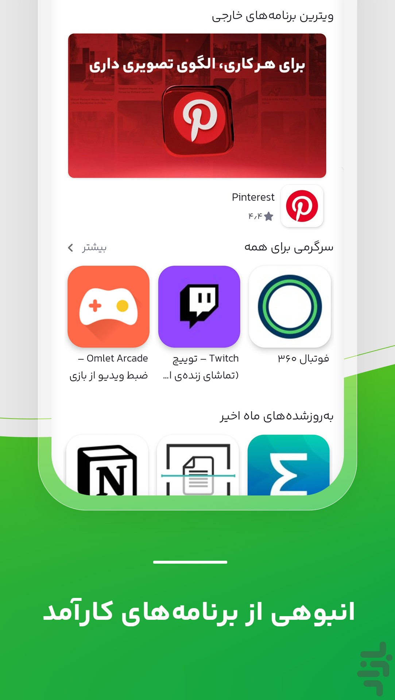

从 2011 到 2025：这家伊朗应用商店十三年迭代里的变与不变
2025 年股权易主、儿童专区独立、国际应用常态化——从十三年的演进轨迹看一家本地应用商店如何在制裁夹缝里走出自己的节奏。
我第一次注意到这家商店是在 2025 年初，行业媒体 Digiato 报道了它的股权变更——运营了十四年的 Hezardastan 集团把它移交到 Pegah Holding 旗下。那天我翻了一下它的首页，国际应用推荐位里 Pinterest 和 Twitch 并排摆着，旁边是一整屏的波斯语本地工具。一个应用商店能在制裁环境下同时把这两类内容摆上同一排，本身就是个有意思的现象。
现状：它今天是什么样
先把镜头拉到现在。打开它的bazaar官网，你会看到一个功能密度相当高的应用商店——不只是一个分发入口，它同时是伊朗开发者的变现平台、本地支付通道、还带一份官方杂志。官方口径里它是「伊朗最大的应用商店」，也是「游戏开发者最大的平台」。

几个数字能帮你快速锚定它的体量：儿童专区单独就有超过十七万款应用和游戏；国际应用官方说「数千款」，主流泛用型的 Pinterest、Twitch、Firefox、CoD Mobile、Free Fire 都在架上，而且接入了本地里亚尔支付。界面支持波斯语和英语双语切换，切英文的路径是设置里的「زبان」选项，找齿轮图标比认字快。
它最让我印象深的不是某个单独功能，而是几个功能拼在一起产生的整体感——一边是面向全球开发者的开放式分发，一边是本地用户的支付和流量补贴（从bazaar下载享半价流量政策），中间还插着一个儿童隔离专区。这三件事放在别的市场看起来不稀奇，但在伊朗这个特殊语境下，每一项选择背后都藏着十多年的取舍。
来路：十三年的关键节点
后来翻bazaar文档的时候发现，版本级历史其实不多——没有 changelog 风格的逐版本记录，这本身是个有意思的信号。我能从文档里拼出几条清晰的时间线。
2011 年：从 Hezardastan 起步。 上线时 Google Play 在伊朗的存在感远不如今天，本土市场几乎是空白。Hezardastan 同时在做广告网络 Tapsell，所以这家商店从一开始就不是单纯的分发工具——广告和应用商店的联动逻辑在那时就埋下了伏笔。
中间年份的关键功能：样本文档没提具体版本号，但几个产品判断能反推出来。 儿童专区（Bazaar Kodak）这个功能的出现时机不会太晚——能积累到十七万款内容量，说明它作为独立专区已经存在好多年了。儿童专区不是给家长按分类找亲子应用的入口，而是开启后整个商店视野收缩到专区内部的隔离模式，带家长账号和解锁码验证。这种设计在 2010 年代中后期的全球应用商店里也不多见，更像是一个针对本地家庭场景的长期投入。
国际应用的常态化也是一个值得单独拎出来的决策。Google Play 有的它未必有——开发者因制裁主动屏蔽伊朗市场的那些服务，它无能为力；但它有 Google Play 没有的：波斯语化版本、本地支付接入、针对伊朗网络的可用性优化。文档里说主流泛用型应用基本都有，部分西方服务缺席不奇怪。这个边界感是多年运营磨出来的，不是一次性决策。
2025 年 2 月：股权变更。 这是文档里最明确的一个时间点。Hezardastan 把 ownership 转移给 Pegah Holding——值得注意的是 Pegah 旗下也有 Tapsell（应用广告业务），外界当时担心广告业务和应用商店中立性的冲突。管理层的回应是集团内各业务独立运营，实践中没有出现倾斜。对普通用户的直接影响很小：产品名、账号体系、应用数据全部延续。
样本文档没提到的部分，恰恰能说明一些事。比如我没有找到关于界面改版的版本记录，也没看到某个大版本引入了什么新的首页结构。这家商店的迭代节奏可能就是这样——不追求大版本的视觉爆炸，而是在底层能力上持续堆叠。
规律：从迭代轨迹看团队在死磕什么
把十三年的决策放在一起看，几个长期优先级非常清晰。
第一个，本地化能力是底线。波斯语界面、里亚尔支付 SDK、半价流量政策、波斯语化的国际应用版本——这些东西在全球主流商店里都是边缘选项，对它来说却是核心竞争力。Google Play 进不来，或者进来了也做不到这些，这就是它的护城河。
第二个，儿童安全是单独的一条产品线。儿童专区不是分类标签，是独立的隔离模式，有十七万款独立组织的内容量。能把这件事做成一个独立产品线并且长期维护，说明团队在这个方向上投了不少资源。我在文档里没看到它做过类似「青少年模式」或「内容分级」这种更轻量的方案——一上来就是重投入的隔离模式，这在应用商店里不常见。
第三个，对国际应用保持开放但不硬扛。能上架的主流国际应用尽量接进来，接入本地支付，做波斯语化；开发者屏蔽伊朗的，商店就认这个边界——文档里明明白白写了「那是商店边界，不是搜索方法问题」。这种克制比硬做一个「代理上架」要健康得多，也更可持续。
反过来，什么是它一直没碰的？样本文档里没看到过应用社区、用户评论体系强化、或者和社交媒体的深度绑定。这些功能在其他应用商店里是标配，但它的文档结构里完全没有对应条目——要么是优先级一直靠后，要么是本地生态里这部分需求可以被其他产品承接。
预判：照这个路线走下去会怎样
从它的迭代规律倒推，有几件事大概率会在接下来一两年发生。
最值得关注的是 Pegah Holding 接手后的整合。管理层说各业务独立运营，但 Tapsell 广告网络和应用商店之间天然存在协同空间——比如开发者在 Tapsell 投放广告后能不能直接看到 Bazaar 商店的安装转化数据？如果这个打通做了，会改变本地开发者的投放习惯。文档里没提任何相关计划，但这个协同是摆在台面上的。
儿童专区会继续扩。十七万款内容只是当前数字，儿童安全作为独立产品线的定位已经站稳了。如果它在这个方向上继续投入，有可能从应用分发延伸到家长管理工具，比如时长控制、内容推荐的个性化——现在的专区还是相对静态的隔离模式，动态化是自然的延伸方向。
国际应用的边界可能会慢慢模糊。文档里提到「部分国际服务因制裁缺席」，这部分商店自己解决不了，但主流泛用型应用已经在了，接下来可能会有更多波斯语化和本地支付接入的案例。从用户角度看，它在国际应用上的定位会越来越像「Google Play 在伊朗的务实替代版」——不是完全等价，而是在能覆盖的范围内把体验做到本地化。
当然这些都是从现有迭代规律推的，不是什么官方口径。这家商店十三年的节奏一直是「稳」，不急不躁地堆能力。说不定再过一年翻它的文档，还是没有大版本号的新闻，但某个角落悄悄多了一个新功能，一用发现已经做得很成熟了。
顺手提一句，这篇用到的版本演进资料，我在GitHub、Gitee、GitCode各留了一份备份，毕竟伊朗那边访问境外服务偶尔不稳定，多几条路总是好的。这种产品，值得盯着看。